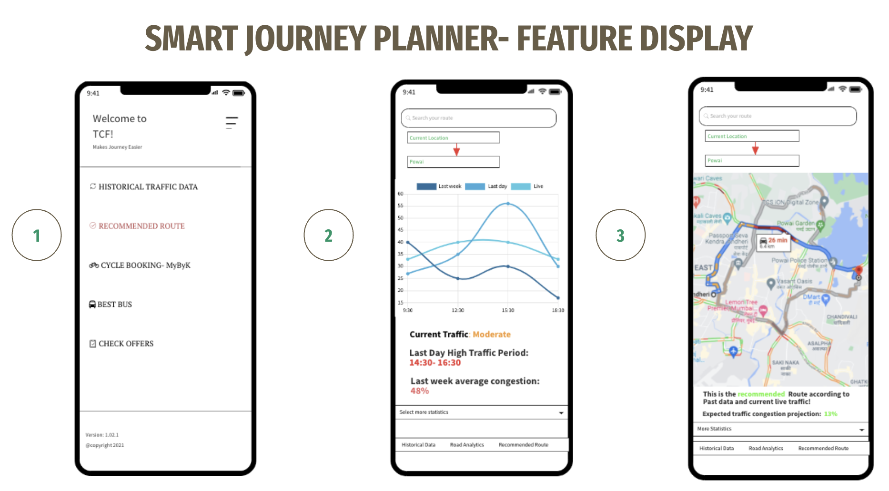

Grofers Case Study for APM
This deck was selected for the campus placement of Grofers Associate Product Management program. The deck link is given here on this link.
Problem Statement:
"Defining the increase in traffic and propose short term & long term solutions for any metropolitan city in India which should be backed by feasibility and ROI"
-
City Chosen:Mumbai
-
Overall Problem: 1. A block of people are hesitant to take the public transport 2. 80% of time google Map doesn't change it route untill with accurate dynamicity. 3. Mumbai consisting of largest 2/3/4 wheeler cars altogether 4. Largest number pedestrains and cycle users in Mumbai 5. Road has many potholes due to Monsoon 6. Highest number of unfinished road projects
-
Solution approach: The solution should be done from both short and long term approaches. The solution is mapped with the painpoints of the common people which should have 1. Well catered 2. Well efficient 3. Well innovated. For that the Avoid-Shift-Improve (ASI) approach is taken where avoid is basically reducing the unnecessary needs of travel, shift is towards sustainable adaption and improvemnt in new technologies. Through this, one strategic solution is congestion price based model where the congestions can be reduced by imposing taxes on those road. Another is by constructing the incomplete roads wuth segments such that it can provide optimal path segment to each type of road traveller. And finally a App-based journey planner to get real-time features on the city public transport and facility to book tickets through that app. The Success metrics for this app will be engagement rate(DAU, MAU), activation rate